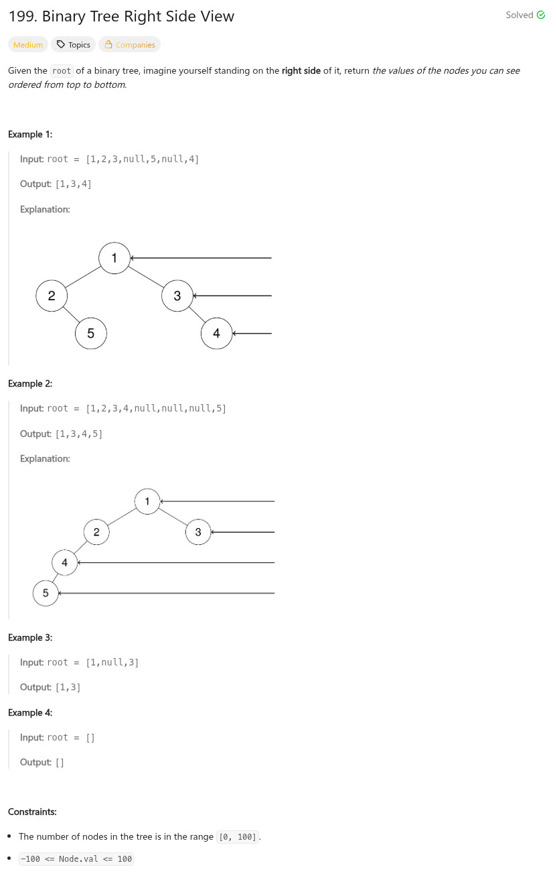

參考資訊：
https://www.cnblogs.com/grandyang/p/4392254.html
題目：

/**
* Definition for a binary tree node.
* struct TreeNode {
* int val;
* TreeNode *left;
* TreeNode *right;
* TreeNode() : val(0), left(nullptr), right(nullptr) {}
* TreeNode(int x) : val(x), left(nullptr), right(nullptr) {}
* TreeNode(int x, TreeNode *left, TreeNode *right) : val(x), left(left), right(right) {}
* };
*/
class Solution {
public:
vector<int> rightSideView(TreeNode* root) {
vector<int> r;
queue<TreeNode*> q;
if (!root) {
return r;
}
q.push(root);
while (q.size() > 0) {
r.push_back(q.back()->val);
int len = q.size();
for (int i = 0; i < len; i++) {
TreeNode *t = q.front();
q.pop();
if (t->left) {
q.push(t->left);
}
if (t->right) {
q.push(t->right);
}
}
}
return r;
}
};